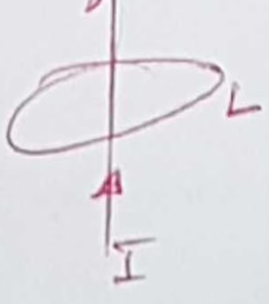

La asignatura se llama Circuits and Systems. El código de la asignatura es EE44. La universidad en la que se imparte es Caltech. El profesor es Ali Hajimiri.
Esta asignatura engloba dos materias en una. Normalmente, en las universidades siempre se han estudiado por separado las materias que engloban esta asignatura: teoría de circuitos y teoría de sistemas. Aquí, se ven juntas, pues tienen mucha relación. Creo que la teoría de circuitos podría considerarse que está incluida en la teoría de sistemas.
En cuanto al recorrido de la asignatura, veamos por encima los contenidos.
Se comenzará con la teoría de circuitos siguiendo el itinerario típico, como el que se sigue, por ejemplo, en el libro de Nilsson y Riedel. Cuando lleguemos al análisis en el dominio del tiempo, se incluirá el análisis de sistemas.
Según el profesor, esta forma innovadora de abordar estas materias no lo hace por la importancia de la materia en sí, sino porque este conocimiento nos permite también analizar circuitos con excitación de cualquier tipo, en general.
Luego, se estudiará la teoría de operadores. Luego, el análisis en el dominio de la frecuencia. Se usará el dominio de la frecuencia compleja. Luego, funciones de transferencia, ceros y polos. La transformada de Laplace y la de Fourier.
La clave está en que estamos haciendo modelos matemáticos del mundo físico.
Fundamentos de circuitos
Definiciones // Propiedades de grafos // Corriente y voltaje // Potencia y energía
Introducción
Esta asignatura estudia un subconjunto de los sistemas eléctricos que pueden estudiarse de forma simplificada respecto a los sistemas eléctricos en general. Es, por tanto, una asignatura en la que se estudia la ciencia aplicada. Por tanto, se considerarán como prerrequisitos principales una asignatura de electromagnetismo clásico y de cálculo de nivel de ingeniería o de física. Así mismo, se usarán explicaciones divulgativas sobre los fenómenos microscópicos de la materia (átomos, electrones, etc.), pero no se necesitará tener conocimientos rigurosos en ese campo.
Repaso de las ecuaciones de Maxwell
Como sabrá, los fenómenos del electromagnetismo clásico se basan en las ecuaciones de Maxwell del electromagnetismo. En la teoría de circuitos, sin embargo, no se usan las ecuaciones de Maxwell a la hora de trabajar, sino una serie de ecuaciones que son más sencillas: no son ecuaciones diferenciales de vectores. Justificaremos por qué podemos simplificar, en nuestro estudio de los circuitos eléctricos, estas ecuaciones y obtener otras más sencillas.
Las ecuaciones de Maxwell del electromagnetismo se suelen representar mediante 4 ecuaciones, aunque, en cursos más avanzados, se pueden representar en 2, o incluso en 1. Aquí, la representaremos como las 4 ecuaciones \(\ref{eq-maxwell-1}\), \(\ref{eq:maxwell-2}\), \(\ref{eq:maxwell-faraday}\) y \(\ref{eq:ley-ampere-mod}\).
\(\vec{D}\) es el desplazamiento eléctrico, que es igual a \(\vec{D} = \epsilon \vec{E}\).
\(\epsilon\) es la permitividad eléctrica en el medio en el que estamos.
\(\epsilon = \epsilon_r \, \epsilon_0\), siendo \(\epsilon_r\) la permitividad eléctrica relativa en el medio en el que estamos y \(\epsilon_0\) la permitividad eléctrica en el vacío.
\(\vec{H}\) es la fortaleza del campo magnético (magnetic field strength).
\(\vec{B}\) se conoce como la densidad del flujo magnético (magnetic flux density tiene otros nombres también; también hay quien lo llama el campo magnético). Análogamente a los fenómenos puramente eléctricos, tenemos aquí que \(\vec{B} = \mu \vec{H}\).
También, \(\mu = \mu_r \, \mu_0\), siendo \(\mu_r\) la permitividad magnética relativa en el medio en el que estamos y \(\mu_0\) la permitividad magnética en el vacío.
\(\vec{\nabla} \cdot\) es el operador divergencia (en inglés, de forma abreviada, div).
\(\vec{\nabla} \times\) es el operador rotacional (en inglés, de forma abreviada, curl).
Veamos los significados de cada una de estas ecuaciones:
Primera ecuación de Maxwell
La primera ecuación de Maxwell no es más que la ley de Gauss del electromagnetismo. Para un medio lineal, es lo mismo que
La integral de ese vector en toda esa superficie \(S\) (es decir, el flujo de \(\vec{D}\) en esa superficie \(S\)) es igual a la carga encerrada \(Q\) en el interior de esa superficie \(S\). Esa carga interna \(Q\) es la que genera el campo \(\vec{D}\) y, por tanto, el campo \(\vec{D}\).
Básicamente, lo que viene a decir es que la carga elécrtica produce el campo eléctrico.
Significa que el flujo magnético que sale de un volumen fijo es \(0\). Otra forma de decirlo es que no existen monopolos magnéticos. No puede darse un material con magnetismo que solo tenga un polo norte o un polo sur.
El cambio en el flujo magnético crea un campo eléctrico.
Si tenemos una trayectoria cerrada \(L\) y hacemos la integral de línea de \(\vec{E}\) en \(L\), esa integral es proporcional a la variación del flujo magnético en la superficie interna a esa trayectoria.
Imagina que analizas el flujo de un campo \(\vec{D}\) (podría ser cualquier campo) en una superficie \(S\) que encierra un volumen \(V\). Queremos una propiedad en un punto. Los flujos no se generan uniformemente. Si empezamos a hacer más pequeños esos volúmenes, llegando a un volumen infinitesimal. Así tenemos la propiedad de un solo punto del espacio. Pero si \(V\) es infinitesimal, también lo será el flujo. Por eso lo normalizamos dividiendo por \(V\).
El div indica cuánto late (beats) ese punto del espacio.
Es también el valor de una propiedad en un punto del espacio.
El curl indica cuánto genera de un campo cerrado circular.
Cuarta ecuación de Maxwell
Es la ley de Ampère modificada porque la ley de Ampère no tenía la parte \(\partial \vec{D}/\partial t\). Esa parte la añadió Maxwell cuando formuló sus ecuaciones del electromagnetismo, pues pensó que era algo que faltaba.
Efectivamente, se comprobó experimentalmente que era así. De hecho, esa componente es la que teóricamente dedujo que existían unas cosas llamadas ondas electromagnéticas. Luego, se comprobó experimentalmente que así era (creo que fue Hertz quien demostró experimentalmente su existencia).
Si tienes una trayectoria cerrada \(L\) y hallas la integral de línea de \(\vec{H}\) por \(L\), la tasa de cambio del campo eléctrico en la superficie interior a \(L\) inducirá TKTKTKTKTK.
De otra forma, cambios en el campo eléctrico producen un campo magnético.
La ley de Ampère original, sin la componente \(\partial \vec{D}/\partial t\), decía que el campo magnético en una trayectoria cerrada generada eso es igual a la corriente total en el interior.
Ley de Ampère
\[ \oint_L \vec{H}\,\text{d}\vec{l} \]
Es decir, la corriente produce campos magnéticos.
Entonces, cuando Maxwell estudió estos fenómenos, estudió la simetría de estas ecuaciones y le pareció que la ley de Ampère estaba incompleta. Incluyó entonces la componente \(\partial \vec{D}/\partial t\), a la que comúnmente se la conoce como corriente de desplazamiento.
Esta fue la base para predecir la existencia de las ondas electromagnéticas. Según esta ecuación, si dos cosas se afectan mutuamente, se tendrá entonces una onda, una perturbación de una propiedad que se propaga (la perturbación).
Mezclando esta última ecuación con la ley de Faraday, llegamos a la conclusión de que la velocidad de la onda es de \(\left(\sqrt{\mu_0 \, \epsilon_0}\right)^{-1}\).
Las constantes \(\mu_0\) y \(\epsilon_0\) se conocían de los experimentos. Entonces vio Maxwell que coincidía con la velocidad de la luz, lo cual le hizo pensar si la luz es una onda electromagnética.
Inciso: ¿Vemos la conservación de la carga en esas ecuaciones? ¿Deberíamos tener otra ecuación aparte para la conservación de la carga? Si tomamos la divergencia en ambos lados de la igualdad en la ecuación de la ley de Ampère modificada,
y, puesto que la divergencia de un rotacional es siempre igual a \(0\), en este caso, \(\vec{\nabla} \cdot (\vec{\nabla} \times \vec{H}) = 0\) y deducimos que